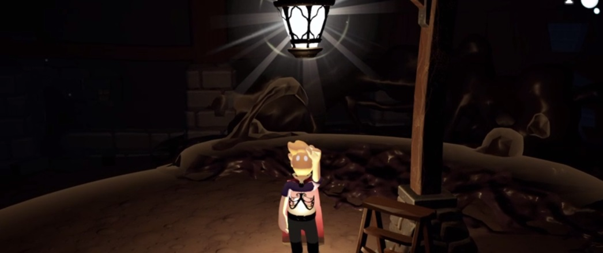

WaxHeart

WaxHeart is an atmospheric-horror 3D Platformer inspired by many genre-defining classics, with a different mood. The core gameplay mechanic takes the form of the WaxChild's light. How the player dims, brightens, or hides this radiance will determine the fate of this eerie, ruined world. WaxHeart is currently deep in development with a playable Steam demo of the story's first world available to play.
This is the first major project I've worked on outside of student projects. WaxHeart began life as a project at LCAD before continuing its development outside our Director's Graduate program. I joined the team approximately two years into WaxHeart's development. My official role on the project is "Unity Engineer" where I implement Gameplay features, bug fixes, and all associated tasks that come with a professional development pipeline. The primary contributions I've made to the project thus far come in the form of Enemy Behaviors, Item Management/Features, and various Bug Fixes & Gameplay implementations. I have learned a great deal from my time working on WaxHeart and have truly felt my game development skills expand even greater here than ever. I mean this not just technically, but also in terms of working on a larger codebase with a larger team. More details specifically about the game can be found on our official website, waxheart.info. Developed in Unity, written in C#
Release Date: TBA.
Platform: TBA